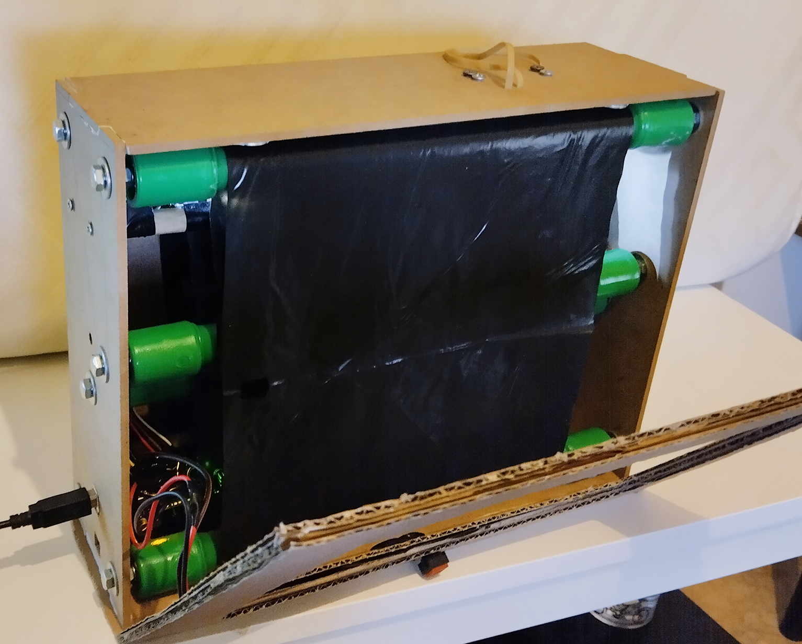
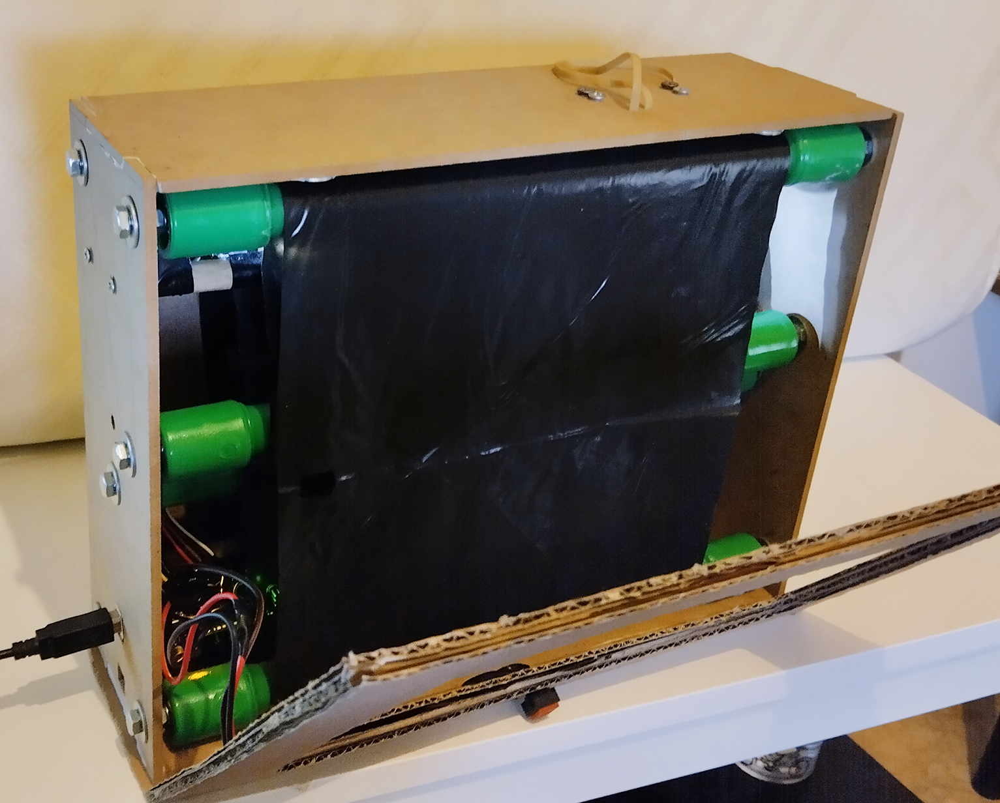
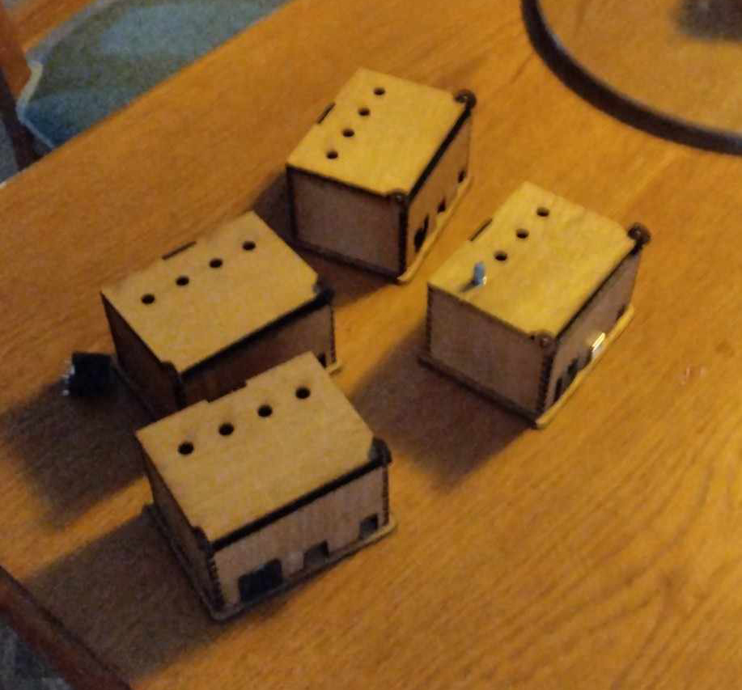
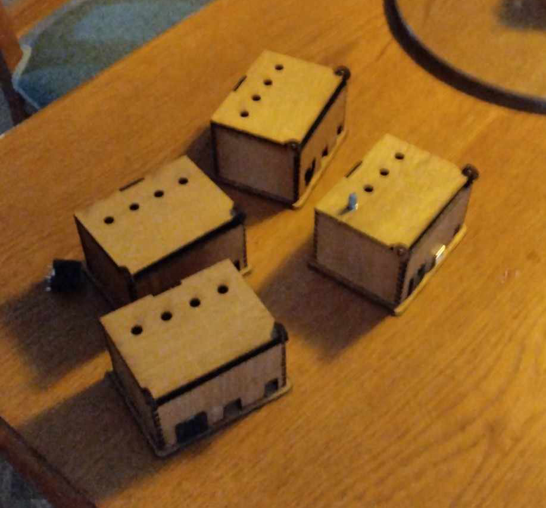
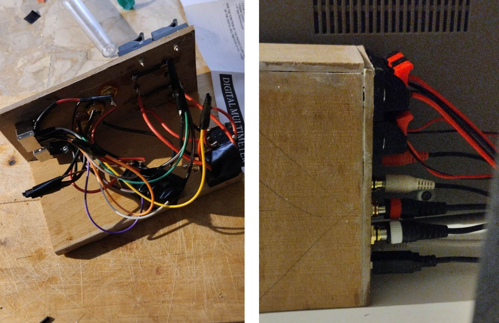
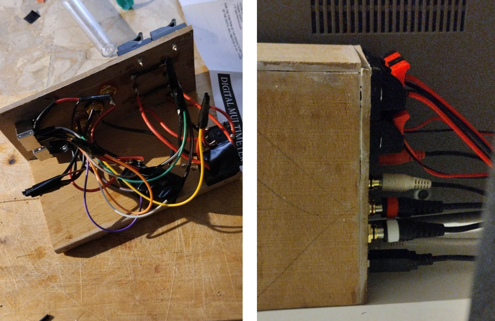

Αυτή είναι μια προσωπική συλλογή από κατασκευές, εγκαταστάσεις και έργα που δεν σχετίζονται απαραίτητα θεματικά μεταξύ τους. Άλλα δημιουργήθηκαν στο πλαίσιο μαθημάτων ή εκθέσεων, κάποια για καθαρά πρακτικούς λόγους, και άλλα ως δοκιμές νέων τεχνολογιών ή ως αφορμές για πειραματισμό.
Η "Αυτόματη Τηλεόραση" είναι ένα παιχνίδι-κατασκευή από MDF, σωλήνες πολυπροπυλενίου, μία σαμπρέλα ποδηλάτου, χαρτόνι, μαγνήτες, ρουλεμάν, μεταλλικά εξαρτήματα, LEGO και μικροηλεκτρονικά. Εμπνευσμένη από τις παιδικές χειροτεχνίες με ρολά κουζίνας και την αισθητική των ξύλινων τηλεοράσεων της δεκαετίας του '70, αφηγείται μια ιστορία για τη σχέση του ζωγράφου με την τεχνητή νοημοσύνη και την εμπορευματοποίηση της τέχνης.
 

Το "Έπιπλο-MIDI" βασίζεται επίσης στην αισθητική των ρετρό ξύλινων ηλεκτρικών συσκευών. Είναι μια συσκευή με Arduino που στέλνει MIDI σήματα μέσω καλωδίου DIN. Στο βίντεο, επικοινωνεί με μια κάρτα ήχου και ένα script στο περιβάλλον SuperCollider.

.jpg)
Το "Έπιπλο-midi" αποτέλεσε κίνητρο για την κατασκευή αυτών των κουτιών, που μπορούν να χωρέσουν έως 4 ποντεσιόμετρα ή κουμπιά. Αυτά αργότερα χρησιμοποιήθηκαν σε ένα ανοιχτό εργαστηρίο ρομποτικής και MIDI.
 

Επίσης για την κατασκευή ενός συστήματος ρελέ για την αλλαγή εισόδου μίας καρτας ήχου από απόσταση.
 

"Ο χαμός πίσω από την πλάτη" είναι μια κατασκευή κυρίως από ανακυκλωμένα υλικά: ξύλο από παλιά έπιπλα, ελατήρια από στρώμα, μία ρόδα ποδηλάτου και μία χαλασμένη φραπεδιέρα χειρός. Αποτελεί ένα σχόλιο στην παγιωμένη μορφή του «μαθήματος ως μονόλογος», όπως συχνά βιώνεται στο ελληνικό εκπαιδευτικό σύστημα.
"Η πόλη είναι μαγική" είναι ένα animation του οποίου τα καρέ είναι αποτυπωμένα σε σημεία του δημόσιου χώρου της θεσσαλονίκης. Τα επιμέρους καρέ δημιουργήθηκαν στο Blender και εκτυπώθηκαν σε χαρτόνι οντουλέ.
Το κρεβάτι για το Hyundai Matrix (2004) είναι μια κατασκευή από κόντρα πλακέ, δοκάρια και βιδωτά μεταλλικά πόδια, μετατρέποντας το αυτοκίνητο σε όχημα κατασκήνωσης. Ο σχεδιασμός βασίστηκε σε μετρήσεις μέσω φωτογραμμετρίας για τη βέλτιστη αξιοποίηση του χώρου.